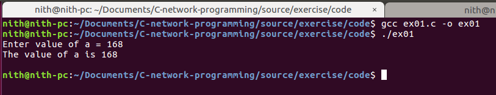

១. ប្រើប្រាស់function (printf, scanf)¶
លំហាត់ទី១¶
ប្រើប្រាស់function: printf, scanf ដើម្បីបញ្ចូល និងបង្ហាញលើscreen។
Source¶
#include <stdio.h>
int main(){
int a;
printf("Enter value of a = ");
scanf("%d", &a);
printf("The value of a is %d\n\n", a);
}
Note
function printf(), scanf()ជាfunctionរបស់stdio.h។ ដូច្នេះយើងត្រូវinclude វាមក ទើបកូដដំណើរការត្រូវ។
Output¶
Note
មជ្ឈដ្ថានខ្ញុំសរសេកូដ គឺUbuntuដើម្បីសរសេកូដ និងrun។
gcc ex01.c -o ex01
Commandនេះនឹងប្រើ GNU C compiler ដើម្បីcompile ex01.c និងoutput (-o)។ ជាលទ្ធផលកើតfile executable ex01។
Execute file: ./ex01 ជាការស្រេច។
បើអ្នកប្រើប្រាស់ windows អ្នកគួដំឡើងdev c ដើម្បីប្រើ ព្រោះវាមានភាពងាយស្រួល។